SporKun HUD'en overlever
Minikortet, placeringen og mønttælleren tegnes. Alt det, der hører til 3D-verdenen, mangler. Til sammenligning: øverst er referencebilleder af den samme bane, nedenunder vores egne frames.
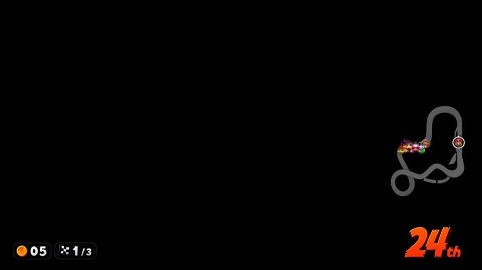
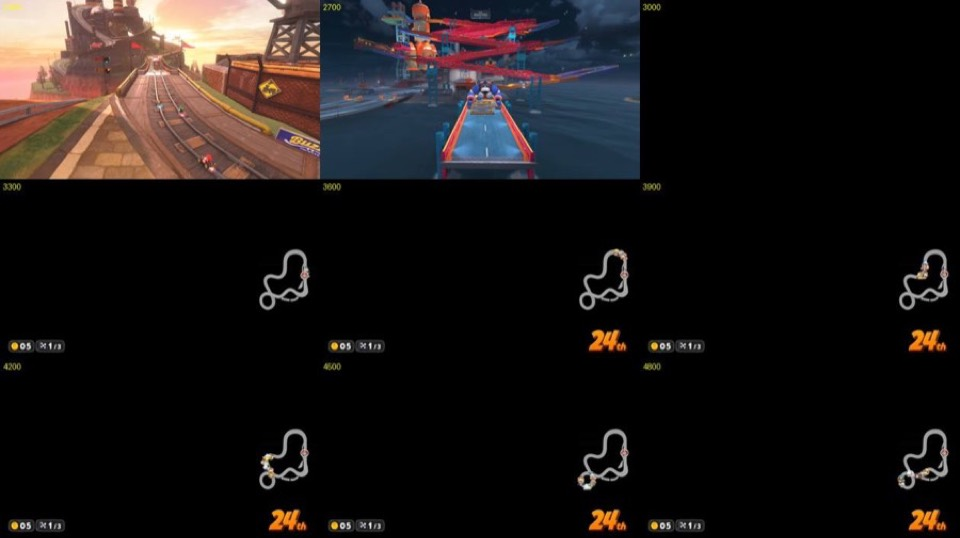
Logbog over hvordan vi fik spillets 3D-grafik frem på Steam Deck: NVN-kommandoer fra Switch 2 oversat til Vulkan, uden emulator. Det startede med en sort skærm og er nået til en synlig bane. Billederne viser hvert trin.
Spillet starter, lyden kører, og alle 2D-skærme vises korrekt: titel, verdenskort og Grand Prix-menuen. Det viser, at teksturer, UI-shadere og præsentationen til skærmen fungerer.
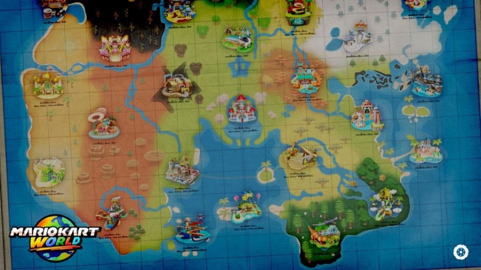
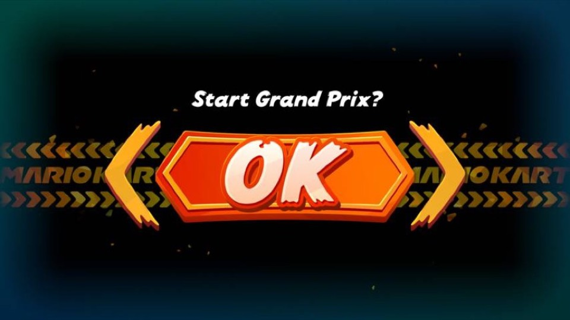
Så snart et løb starter, bliver skærmen sort. Spillet kører videre bagved, men der kommer ingen 3D-grafik ud.
Minikortet, placeringen og mønttælleren tegnes. Alt det, der hører til 3D-verdenen, mangler. Til sammenligning: øverst er referencebilleder af den samme bane, nedenunder vores egne frames.


Vi dumpede hundredvis af render targets for at finde ud af, hvor billedet forsvandt. Mange teorier blev afprøvet og afvist: ASTC-komprimering, tåge-volumen (froxels) og dynamiske skrivemasker. De gav ingen løsning, men vi lærte pipelinen at kende.
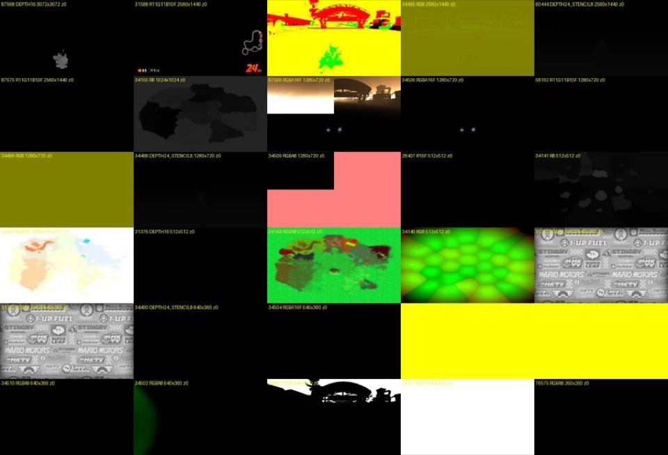
I lysbufferen dukker banens konturer op i rødt. Geometrien tegnes altså, men noget sletter eller skjuler den, før den når skærmen.
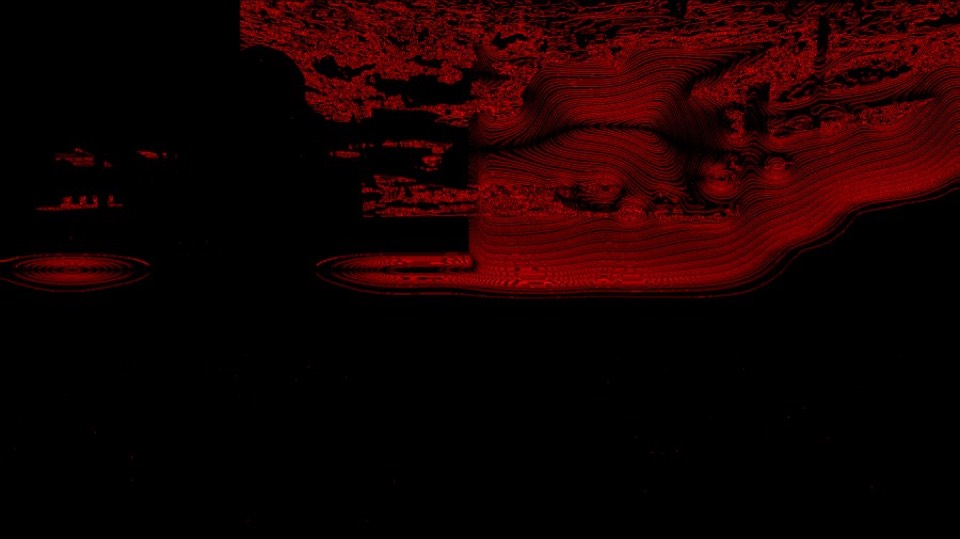
Vi satte Eglantine-emulatoren op på Deck'en for at have rigtige billeder af de samme passes at sammenligne med. Dens indbyggede frame-dump gav et facit for hvert trin. RenderDoc blev opgivet, fordi GPU-hukommelsen (GTT, grænse 7,8 GB) løb tør.
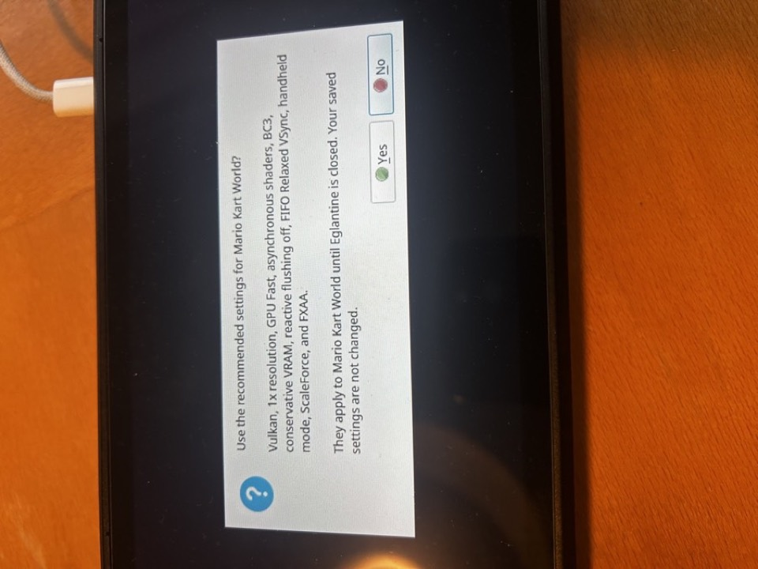
Vores pass-billeder blev taget, før den submission, de hørte til, var kørt. Mange konklusioner som „geometrien tegner intet“ var derfor forkerte. Billederne kopieres nu direkte i kommandostrømmen og skrives til disk, når GPU'en er færdig.
Den øverste del af billedet blev synlig, men som en grøn, overbelyst silhuet. Vi fandt ud af, at et gammelt hack, der lavede dybdetesten EQUAL om til LEQUAL, skadede mere end det hjalp. Efter det blev fjernet, blev scenen omkring 15 gange lysere.
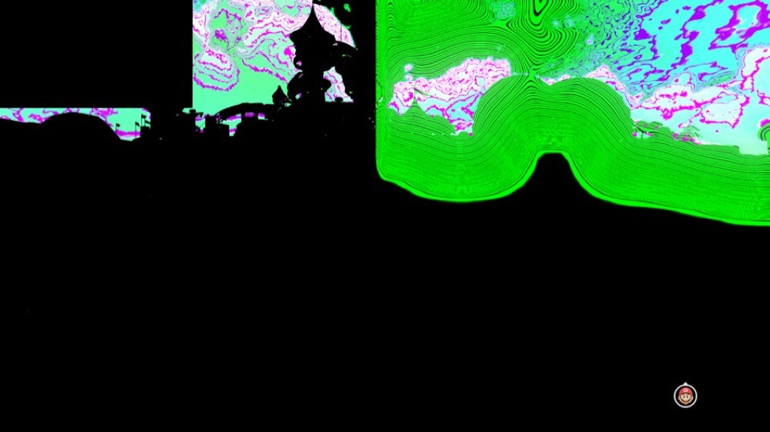
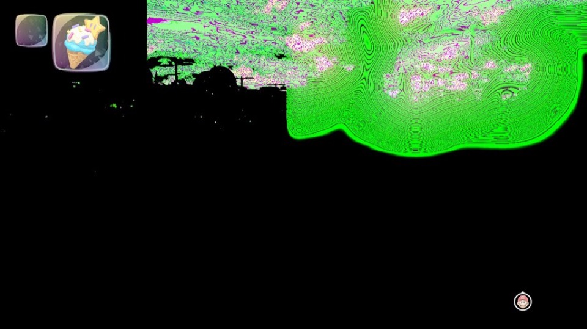
NXRT_VK_DEPTH_EQUAL=0MKW bruger betinget rendering: „ryd skærmen, hvis tælleren ikke er 0“, efterfulgt af en TIMESTAMP-rapport til den samme adresse, så rydningen kun sker én gang pr. frame. Vi skrev tidsstemplet i tællerfeltet og først, når GPU'en var færdig. Derfor blev den færdige scene ryddet igen. Nu skrives tælleren som 0 med det samme.
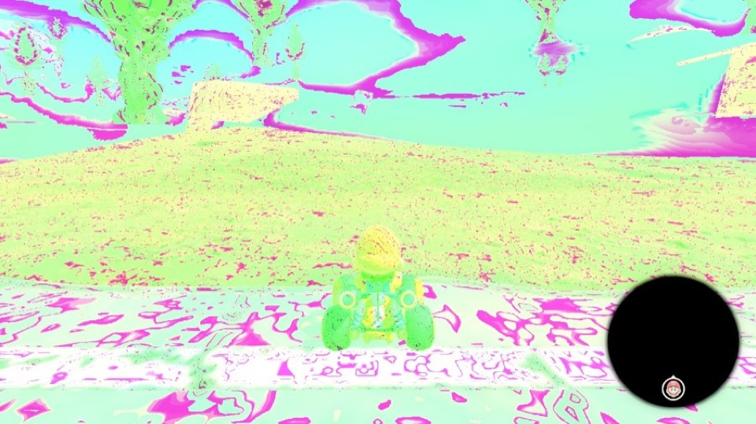
„Det her er vores første break-through i lang tid!!“
Farvetabeller (256×64 og 64×64 RGBA16F), terræn-atlasset (6144×6144) og det endelige opskaleringsmål blev oprettet uden render target-rettigheder. Derfor forsvandt alt, der blev tegnet ind i dem. Minikortet blev rundt og fyldt ud.
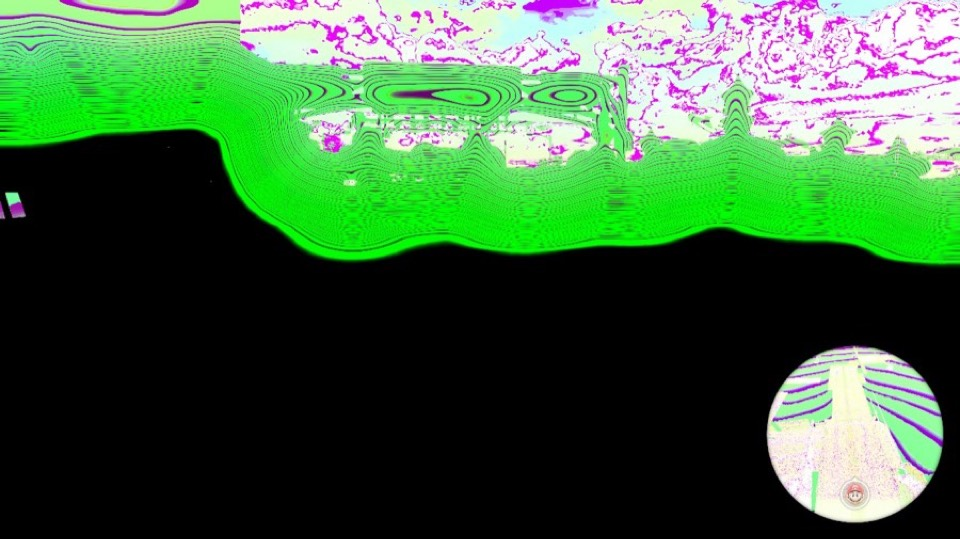
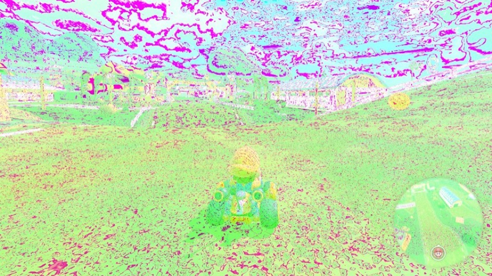
Vi fulgte billedet gennem efterbehandlingen, pass for pass. Selve 3D-scenen er korrekt: Mario, sand og kaktusser. Lige efter fuldskærms-passet for tåge og atmosfære (shader a6a668, varianten 33ce6e) kommer de grønne og lyserøde pletter og konturstriberne. Tone-mapping og opskalering sender bare fejlen videre.
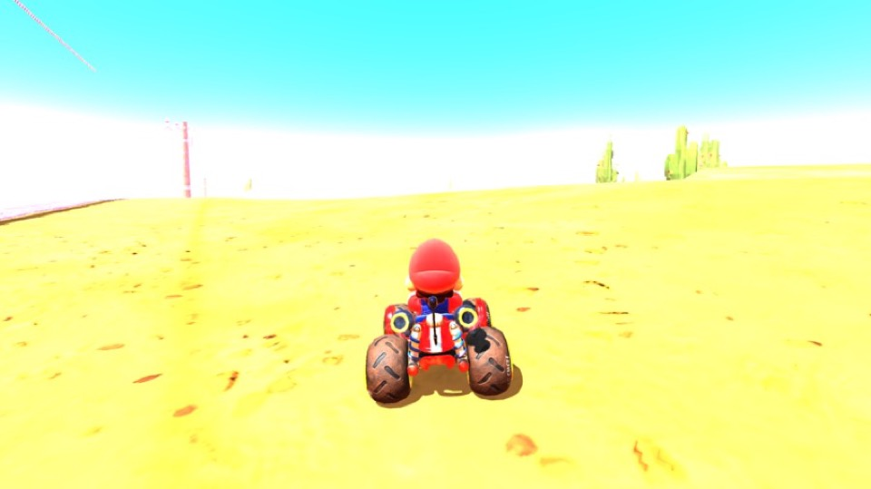
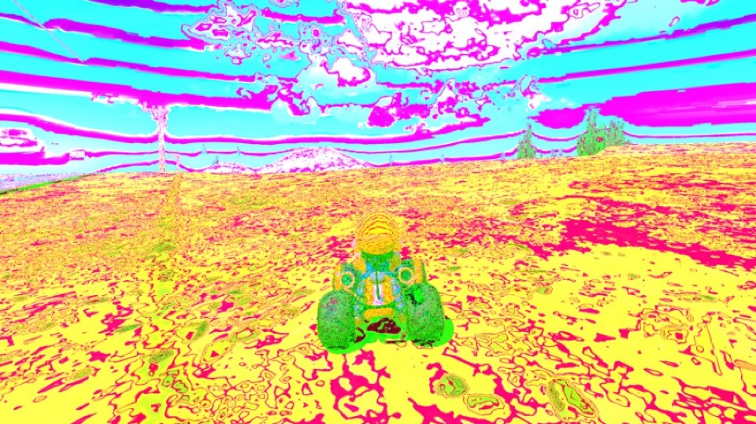
Med NXRT_VK_SKIP_FS=a6a668… forsvinder pletterne og striberne helt. Der er stadig et lyserødt skær på nogle overflader. Det kommer fra selve scenen og er en anden fejl.
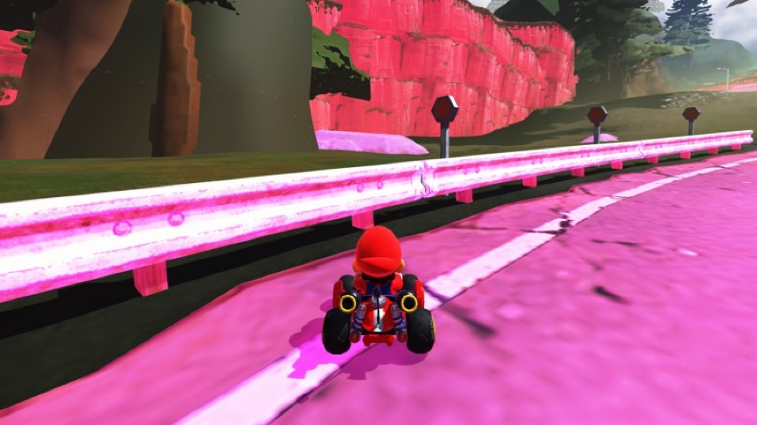
Tåge-passet læser fra den tekstur, det selv skriver i. Teorien var, at AMD's komprimering gav skrald. Vi tilføjede usage-flaget ATTACHMENT_FEEDBACK_LOOP, men billedet var stadig ødelagt. Undervejs opdagede vi, at byggescriptet ikke kopierer til kit/nxrt, så tre kørsler brugte den gamle binær.
Med et nyt værktøj, NXRT_VK_PD_DRAWTEX, gemte vi alt, hvad tåge-passet læser. De to 32×32×32-tabeller viste sig at være en korrekt log-kodet identitetstabel. Wrap-tilstanden for teksturopslag var også korrekt.
Tåge-shaderen pakker to farvekanaler som half-floats i ét 32-bit tal og pakker dem ud igen med instruktionen I2F.U16.H1, der konverterer den høje halvdel. ampere-lower, som oversætter Switch 2-kode til Maxwell-format, gav „halvord 1“ videre som „byte 1“. Den oversatte shader læste derfor bit 8–23 i stedet for 16–31, og bits fra to kanaler blev blandet. Det gav de periodiske pletter og striber. Rettelsen er én linje: vælgeren ganges med 2 for 16-bit kilder.
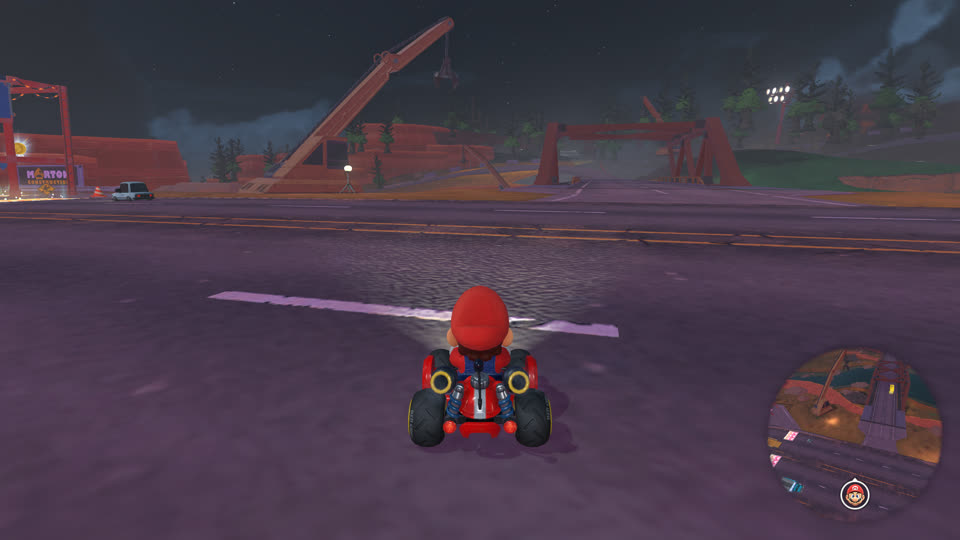
Vores runtime melder konsoltilstand til spillet. Det renderer derfor internt i 2560×1440 og sender 4K ud, selvom Deck'ens skærm er 1280×800. Målt i docket tilstand: 45–70 ms GPU-tid pr. frame, svarende til 7–11 fps. Næste skridt er at måle i håndholdt tilstand (DM_OPMODE=0).